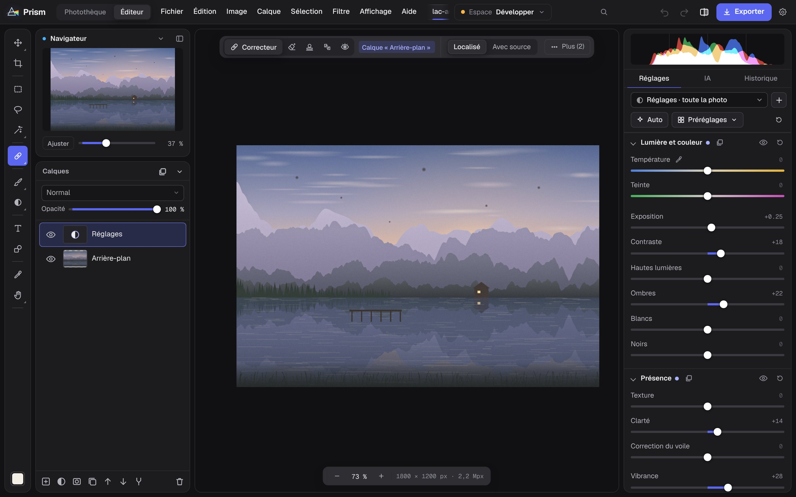
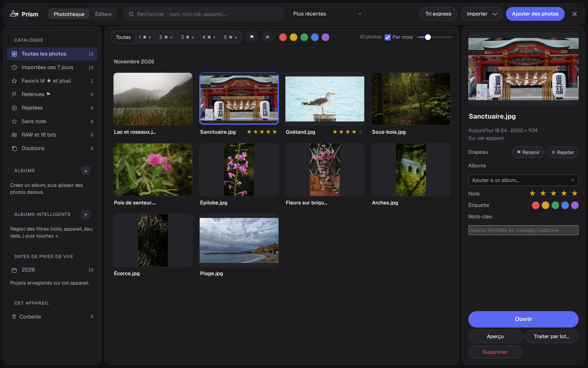
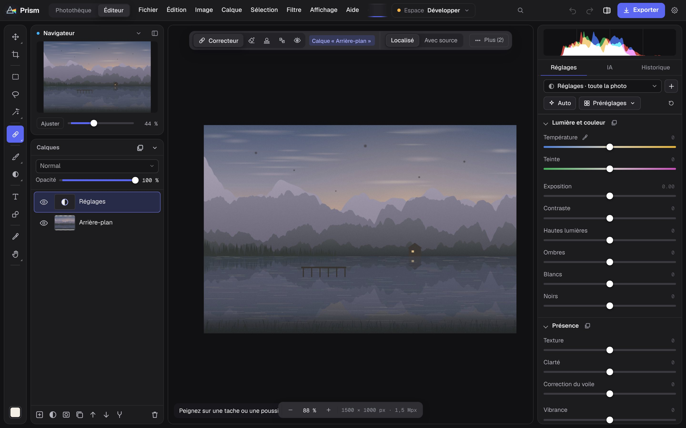
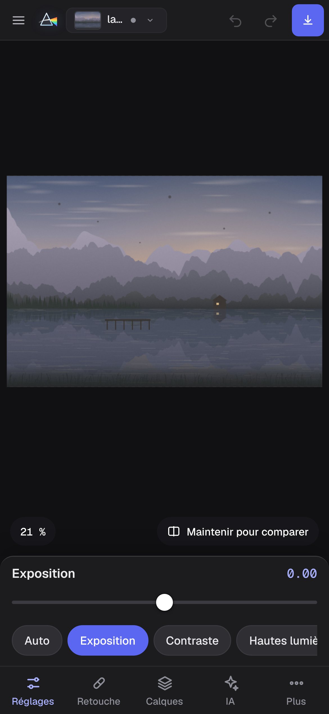

Retouche photo,
sans détour.
Calques, réglages, RAW, IA locale et photothèque. Gratuit, pour Mac, Windows et le navigateur.

La plus grosse mise à jour de Prism
Une interface refaite et de nouveaux outils.
Tout ce qu’il faut pour retoucher
Les outils d’un logiciel professionnel, dans une interface claire.
Calques et masques
Calques de photo et de réglage, modes de fusion, masques, sélection au lasso, à la baguette ou par sujet.
Réglages précis
Balance des blancs, exposition, courbes, TSL, étalonnage, clarté, préréglages. Tout reste modifiable.
IA sur votre appareil
Gomme IA, détection du sujet et du ciel, remplissage génératif. Le calcul se fait chez vous, vos photos ne partent pas.
RAW, HEIC, PSD
RAW des appareils photo, photos d’iPhone, fichiers Photoshop, PDF et d’autres, en 16 bits.
Photothèque
Notes, drapeaux, étiquettes, albums, doublons, et le Tri express pour écarter les photos floues.
Votre travail reste chez vous
Vos photos restent sur votre ordinateur, sans compte. L’application marche hors ligne.
Une photothèque pour tout retrouver
Ajoutez des dossiers, notez, triez, cherchez par nom, mot-clé, appareil ou date.
- Tri express : les photos floues mises de côté
- Albums, albums intelligents et doublons
- Double-clic pour ouvrir dans l’éditeur

Reprendre là où vous en étiez
Votre dernière retouche vous attend à l’ouverture. Glissez des photos dans la fenêtre pour les ouvrir.
- Chaque photo garde ses versions
- Une photo par onglet
- Toutes les commandes avec Ctrl K

Sur téléphone et tablette
Dans le navigateur, Prism s’adapte à l’écran : un grand curseur sous le pouce, un appui long pour comparer avant et après.
- Rien à installer
- Les mêmes réglages que sur ordinateur

Télécharger Prism
Gratuit, sans compte et sans publicité.
Mac
Puces Apple et Intel. macOS 11 ou suivant.
Ouvrez le fichier .dmg et glissez Prism dans Applications. La première fois, si macOS refuse : Réglages Système, Confidentialité et sécurité, Ouvrir quand même.
Télécharger pour MacWindows
Windows 10 et 11, 64 bits.
Lancez l’installation. En cas d’alerte : Informations complémentaires, Exécuter quand même.
Télécharger pour WindowsDans le navigateur
Rien à installer. Chrome, Edge, Firefox et Safari, sur ordinateur, tablette et téléphone.
Vos photos sont enregistrées dans le navigateur.
Utiliser en ligneQuestions fréquentes
Une autre question ? Posez-la sur la page du projet.
Prism est-il gratuit ?
Oui. Sans publicité, sans abonnement, sans compte.
Où sont enregistrées mes photos ?
Sur votre appareil : sur l’ordinateur pour l’application, dans le navigateur pour la version en ligne. Aucun serveur. Effacer les données du navigateur efface la photothèque en ligne : l’application est plus sûre.
Est-ce que l’IA envoie mes photos quelque part ?
Non. Les outils d’IA tournent sur votre appareil. Chaque modèle se télécharge une fois, au premier usage.
Prism marche-t-il hors ligne ?
Oui, l’application pour Mac et Windows. Il faut une connexion pour télécharger un modèle d’IA la première fois.
Quels fichiers Prism peut-il ouvrir ?
JPEG, HEIC, PNG, TIFF, WebP, AVIF, PSD, PDF, GIF, BMP, SVG, JPEG 2000 et les RAW de la plupart des appareils photo. Export en JPEG, PNG, TIFF, WebP, AVIF, GIF et en projet Prism (tous les calques).
Pourquoi mon Mac ou Windows affiche un avertissement ?
Prism n’est pas signé par Apple ni Microsoft. Sur Mac : Réglages Système, Confidentialité et sécurité, Ouvrir quand même. Sur Windows : Informations complémentaires, Exécuter quand même. Le code de Prism est public.
Puis-je retrouver une ancienne version de ma retouche ?
Oui. Prism garde une version toutes les 15 minutes, et vous pouvez nommer les vôtres. Tout se passe dans le panneau Versions.